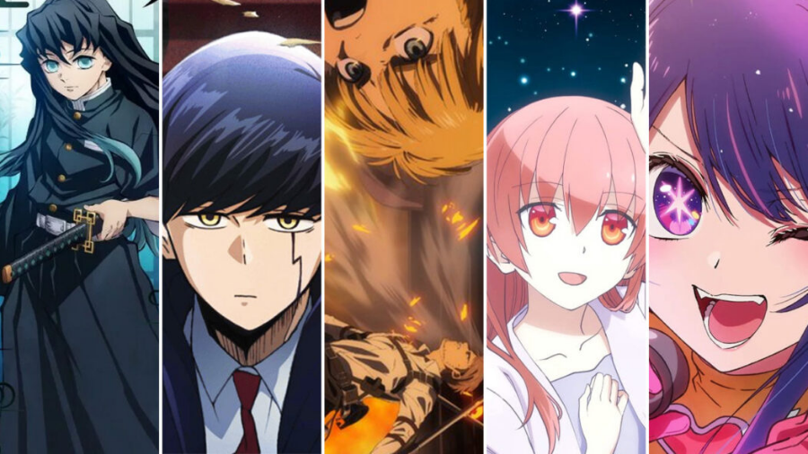

Classement des animés selon moi
Hey ! Voilà un petit classement de differentes adaptation animé de manga Il y a differentes catégories, tout d'abord les incontournables qui sont de long anime (minimum 150 episodes), et ensuite il y en a d'autres moins long mais très agréable à regarder.
Envoyez moi un mail
Sommaire
Les incontournables
1 - Naruto

2 - One Piece

3 - Bleach

4 - Dragon ball Z

5 - Hunter x Hunter

S tier
A tier
B tier
C tier
Nombre d'épisodes : 220 + 500
Genres : Shonen - Aventure - comédie - action